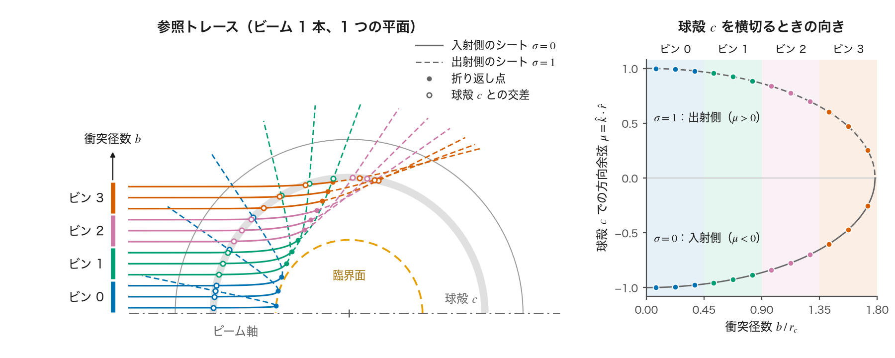
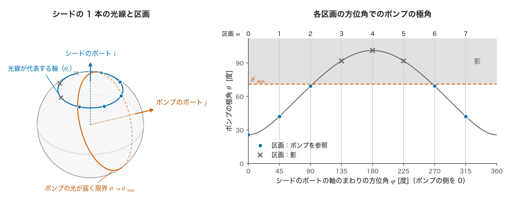
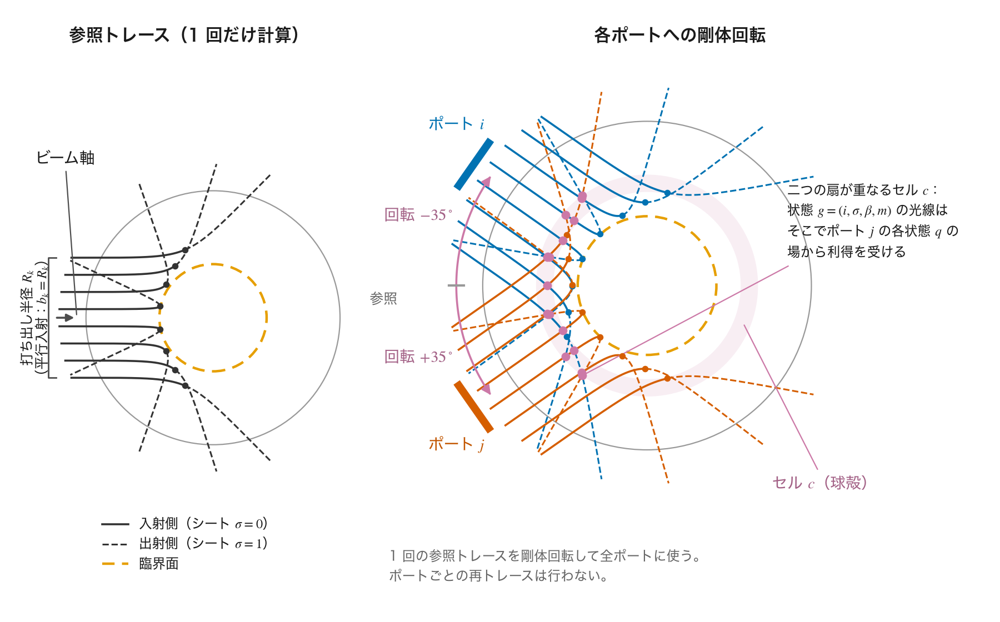
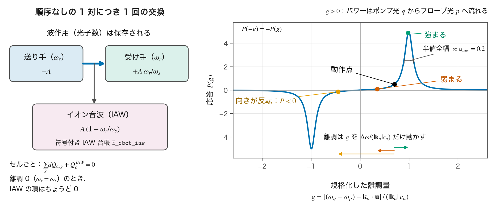

CBET（交差ビームエネルギー転送）reference
TENRYU の交差ビームエネルギー転送（cross-beam energy transfer、CBET）は、交差するレーザービームが駆動するイオン音波（ion-acoustic wave、IAW）を介して、光のパワーを再配分する。1D 球対称の port_section モードでは、代表となる 1 本のビームの屈折軌道を一度だけ追跡し、その結果を実際のポート（port。照射装置でビームが標的へ入射する口）の方向へ剛体回転させる。各光線の記録はビーム軸のまわりの方位角の区画（section）へ複製し、複製した光線のひとつひとつが、自分の位置で他のポートの光線がつくる場（強度と向き）から局所の利得を受ける。これは Follett ら [2] の区画光線追跡（section ray tracing）の考え方である。火面（caustic）の近くでは光線から求めた強度を場の上限（field limiter）で抑え、この方式では厳密に保たれない光のパワーの収支を、火面の近くの寄与に掛けるポンプ乗数（caustic pump multiplier）で閉じる [6]。これにより、球対称の流体計算を保ったまま、実際のポート配置、交差角、偏光平均（polarization average）、波長離調（wavelength detuning）、ポンプ光の減耗（pump depletion）を表現できる。CBET は強減衰極限（strongly damped limit）の誘導ブリルアン散乱（stimulated Brillouin scattering、SBS）である。交差するビームのビートがポンデロモーティブ力（ponderomotive force）でイオン音波を駆動し、ドップラーシフトした共鳴が転送の大きさと向きを決める。この計算に固有の用語は用語の節で説明し、解析解との比較による検証は子頁のCBET の解析解による検証で説明する。
物理機構
同じプラズマ体積で交差する二つの電磁波 \((\omega_p,\mathbf{k}_p)\) と \((\omega_q,\mathbf{k}_q)\) はビートを作る。そのポンデロモーティブ力は差周波数 \(\Delta\omega=\omega_q-\omega_p\) とビート波数ベクトル \(\mathbf{k}_a=\mathbf{k}_q-\mathbf{k}_p\) で振動する。この力がイオン密度の摂動、すなわちイオン音波を駆動する。密度の周期的な変調は屈折率の変調でもあるので、この音波は移動する回折格子として働き、各ビームはそこでブラッグ散乱を受ける。散乱波の向きと位相は相手ビームに重なるため、共鳴的に駆動された格子を介して、一方のビームから他方へエネルギーが可干渉に転送される。これは誘導ブリルアン散乱（SBS）の三波結合（three-wave coupling）であり、散乱の種（seed）が雑音ではなく相手のビームである点だけが通常の SBS と異なる。
速度 \(\mathbf{u}\) で流れるプラズマでは、イオンから見たビートはドップラーシフトし、固有応答は \(\Delta\omega-\mathbf{k}_a\cdot\mathbf{u}=\pm|\mathbf{k}_a|c_a\) で生じる。後で定義する規格化した離調量（normalized detuning）\(g\) はこの条件を無次元化したものであり、\(|g|=1\) が共鳴である。直接照射（direct drive）では次の二つの帰結が重要になる。ひとつは、同じ波長のビーム同士（\(\Delta\omega=0\)）であっても、射影した流速が音速に達する \(\mathbf{k}_a\cdot\mathbf{u}=\mp|\mathbf{k}_a|c_a\)、すなわち膨張コロナのマッハ 1 面では強く交換すること。もうひとつは、意図的に与えた波長離調 \(\Delta\lambda\) が応答曲線上の動作点を移すことである。後者が CBET を緩和する制御手段になる（図D）。
イオン音波の応答関数 \(P(g)\)（次節で定義）は \(g\) の奇関数なので、\(g\) の符号が転送の向きを決める。\(g_{pq}>0\) ならパワーはポンプ光 \(q\) からプローブ光（probe）\(p\) へ流れる。プラズマとともに動く系で青方偏移したビームが、赤方偏移したビームをポンプする、という関係である。光子の描像で見ると、この交換は波作用（光子数）を保存する。散乱された光子は個数を保ったまま \(\omega_s\) から \(\omega_r\) へ振動数が下がり、単位パワー当たりの Manley–Rowe 不足分 \(1-\omega_r/\omega_s\) がイオン音波へ沈着する。従来の縮約はこの不足分を符号付き IAW 台帳へ記帳し、port_section は記帳しない（後述の波作用の節）。
TENRYU が評価するのは、Marozas らの線形・定常・強減衰の局所平面波極限 [1] — LLE（Laboratory for Laser Energetics、米国ロチェスター大学）の 2D 流体コード DRACO が使う形式 — である。イオン音波は局所的な駆動に従属している、すなわちセル間を伝播せずエネルギーを蓄えないと仮定する。この仮定により、交差ごとに局所的な利得係数を置ける。無次元の減衰率 \(\alpha_{iaw}=\nu_a/(|\mathbf{k}_a|c_a)\)（既定 0.2、LLE の 1D 流体コード LILAC の系譜に対する較正値）が共鳴の幅を決める。port_section は火面の近くの強度の上限とポンプ乗数を含む（Follett ら [6]）。\(|\Delta\omega|/\omega_0\) 次のイオン音波加熱補正、プラズマの時間変化による光の周波数のずれ（Dewandre シフト）、スペックル統計、偏光のダイナミクス、広帯域照射、運動論的な \(\nu_a(k)\) は扱わない。
イオン音波利得モデル
プローブ光 \(p\) とポンプ光 \(q\) が同じプラズマセルを横切るとき、無次元利得 \(d\tau_{pq}\) を評価する。プローブ強度は \(dI_p=d\tau_{pq}\,I_p\) に従って増幅される。すなわち \(d\tau_{pq}\) は対数利得 \(d\ln I_p\) であり、線形（強減衰・定常）モデルではポンプ強度 \(I_q\) と経路長 \(ds\) に比例する。移行するパワー \(d\tau_{pq}\,I_p\) は両ビームの強度に比例し、この双線形性は後述の交換式の積 \(L_{g,c}L_{q,c}\) に対応する。役割を入れ替えた \(d\tau_{qp}\) は \(I_p\) に比例する。温度は内部で eV から erg へ変換し、式はガウス単位系の cgs で計算する。
$$ d\tau_{pq}=\eta_{pol}\frac{\lambda_0 e^2}{c^3m_e} \frac{\hat n_e}{1-\hat n_e} \frac{\langle Z\rangle}{\langle Z\rangle T_e+3T_i} P(g_{pq})I_q\,ds, \qquad \eta_{pol}=\frac{f_{cbet}}{4}(1+\cos^2\psi). $$ $$ g_{pq}=\frac{(\omega_q-\omega_p)-\mathbf{k}_a\!\cdot\!\mathbf{u}} {|\mathbf{k}_a|c_a},\qquad P(g)=\frac{g\alpha_{iaw}}{(g\alpha_{iaw})^2+(1-g^2)^2}, \qquad \mathbf{k}_a=\mathbf{k}_q-\mathbf{k}_p. $$- \(\eta_{pol}=\tfrac{f_{cbet}}{4}[1+(\hat k_q\cdot\hat k_p)^2]\) — 交差角 \(\psi\)（\(\cos\psi=\hat k_q\cdot\hat k_p\)）で交わる、非偏光かつ平滑化されたビームに対する偏光平均である。
f_cbetが実験較正を吸収する（DRACO では 1.5、TENRYU の既定は 1.0）。 - \(\lambda_0 e^2/(c^3 m_e)\) — 誘導ブリルアン散乱の結合定数である。式に \(\lambda_0\) が現れることは、長波長の光ほど強い CBET を受けるというよく知られた性質を表す。
- \(\hat n_e/(1-\hat n_e)\) — 密度結合 \(\propto\hat n_e\) と、ビーム対が臨界密度（critical density）へ近づくときの電磁波の誘電的な増強 \(1/(1-\hat n_e)\) の積である。
- \(\langle Z\rangle/(\langle Z\rangle T_e+3T_i)\) — \(\langle Z\rangle T_e+3T_i=\bar m_i c_a^2\) なので、音響的な硬さの逆数にあたる。高温で音速の大きいプラズマほど圧縮しにくく、応答が小さくなる。
- \(P(g)\) — 減衰 \(\alpha_{iaw}\) をもつ強制振動子としてのイオン音波の、吸収成分である。\(|g|\simeq 1\) 付近に極大をもち、\(g\) についての半値全幅は \(\simeq\alpha_{iaw}\)、そして \(g\) の奇関数である。
- \(I_q\,ds\) — 利得はポンプ強度と経路長に対して線形である。ポンプ光の減耗は、場をつくる状態のパワーが後述の求解で変わることを通じてのみ入るため、1 回ごとの評価は線形のままである。
すべてガウス単位系の cgs で評価し、温度は eV から変換した erg を使う。\(n_{crit}=m_e\omega_0^2/(4\pi e^2)\) は 351 nm で \(9.06\times10^{21}\,\mathrm{cm^{-3}}\)、527 nm で \(4.02\times10^{21}\,\mathrm{cm^{-3}}\) となり、電子に関する定数はレーザーモジュールと共有する。利得式に現れる \(\hat n_e=n_e/n_{crit}\) は、この臨界密度で規格化した電子密度である。\(c_a=[(\langle Z\rangle T_e+3T_i)/\bar m_i]^{1/2}\)、\(\bar m_i=A_{eff}m_p\) であり、1 温度モデルの計算では \(T_i=T_e\) とする。
この計算で使う用語
1D の流体計算が持つのは半径方向の分布だけだが、CBET の利得は、二つのビームの光がセルの中で交わる角度 \(\psi\) とビート波数 \(|\mathbf{k}_a|\) に強く依存する（利得モデル）。TENRYU はこの向きの情報を、光線の経路を以下の単位に分けて保持する。ここに挙げる用語は、CBET の光線計算、とくに TENRYU の実装に固有の意味で使うので、まとめて定義する。
ポート、参照トレース、交差
ポート（port）は、照射装置でビームが標的へ入射する口と、その方向である。Laser.port_configuration のポート表が、ポートごとの方向、パワーの重み、波長のずれ \(\Delta\lambda\) などを与える。Studio のプリセットは、GXII を 12、OMEGA を 60、NIF を 192 のポートとして展開する。
参照トレース（reference trace）は、代表とする 1 本のビームの光線を、標的中心とビーム軸を含む 1 つの平面の中で追跡した結果である（図A 左）。球対称のプラズマでは、衝突径数（次項）が等しい光線どうしは、標的中心のまわりの回転で互いに重なる。そのため、この 1 回の追跡を各ポートの方向へ回転すれば、すべてのポートの光線の経路が得られる。Follett ら [2] は、衝突径数を変えて並べたこのような光線の組を sector と呼ぶ。参照トレースの各光線は、ビーム軸のまわりの 1 つの輪（開口を分けた環）を代表する。
交差（crossing）は、この頁では、1 本の光線が 1 つのセル（1D では球殻）を 1 回通過することと、その通過について保存する記録を指す（記録の中身はステップ 1）。ビームどうしが交わることではない。二つのビームの光の重なりは、同じセルに異なる状態（後述）の交差が共存することとして表す。折り返す光線は、折り返し点より外側の球殻を、入射側と出射側で 1 回ずつ通過する。
port_section は、実際のポート配置と、Follett ら [2] の区画光線追跡の考え方を使う CBET の幾何の扱いで、参照トレースを各ポートへ回転し、各状態の光線がほかの状態の場から受ける利得を評価する。既定値の geometry_mode="legacy"（以下、従来の縮約）はポート配置を使わず、二つの光線のあいだの方位角について平均する（次節）。Studio が書き出すのは port_section だけである。
衝突径数と衝突径数ビン
衝突径数（impact parameter）は、光線を屈折のない直線とみなしたときの、その直線と標的中心との距離である。真空から入射する光線では、光路に沿って保存される Bouguer 不変量 \(B=n_{\rm refr}r\sin\alpha\)（\(\alpha\) は動径方向と光線のなす角。レーザー参照）が衝突径数に等しい。したがってプラズマの分布が同じなら、衝突径数だけで、光線が折り返す半径と、各球殻を横切る角度が決まる。衝突径数の小さい光線はほぼ動径方向に深くまで入り、大きい光線は外側で折り返す。
1D のビームは、打ち出し面（光線を打ち出す、ビーム軸に直交する面）上の開口を同心の環に分け、環 \(k=0,1,\dots,N_{ray}-1\) ごとに 1 本の光線を、環の中心の半径 \(R_k=(k+1/2)\Delta R\)（打ち出し半径）の点から、ビーム軸上の焦点を通る直線に沿って打ち出す（\(N_{ray}\) は Laser.rays_per_beam、\(\Delta R\) は開口の半径を \(N_{ray}\) で割った値。レーザーの用語の節参照）。参照トレースの光線は、レーザーの 1D の光線追跡と同じ光線である。光線の直線と標的中心との距離である衝突径数は \(b_k=|z_f|R_k/\sqrt{R_k^2+(Z_{init}-z_f)^2}\) で、打ち出し半径 \(R_k\) とは一般に等しくない（\(z_f\) は焦点の標的中心からの位置、\(Z_{init}\) は打ち出し面の位置。レーザー参照）。
焦点が標的中心にないとき（\(z_f\neq0\)）、\(b_k\) は \(k\) とともに単調に増えるので、光線の番号 \(k\) の順は衝突径数の順に一致する。焦点が標的中心にあるとき（\(z_f=0\)）は、すべての光線が標的中心を通るので、すべての環で \(b_k=0\) となり、\(k\) の順は打ち出し半径の順（ビーム軸となす角の順）を表すだけで、衝突径数の順ではない。port-section の復元は、\(b_k\) ではなく打ち出し半径 \(R_k\) を光線のビーム軸からの距離として使い、節点の極角は発射時の極角と追跡中の積分増分から求める。
衝突径数ビン（impact-parameter bin）は、ビームの光線を番号 \(k\) の順に、本数が等しくなるように \(N_{bin}\)（Laser.cbet.n_impact_bins）組に分けたものである。光線 \(k\) はビン \(a=\lfloor kN_{bin}/N_{ray}\rfloor\) に属し、ビンは番号 \(k\) だけで決まる。ビン 0 はビーム軸の近くを通る光線、ビン \(N_{bin}-1\) は開口の縁を通る光線であり、\(N_{ray}\) が \(N_{bin}\) で割り切れるとき、各ビンは開口を等しい幅の帯に分けたものに当たる（図A 左）。
光線を衝突径数で分ける理由は二つある。第一に、CBET の結合は二つのビームの光が交わる角度で決まるが、同じ球殻を通る光線でも、衝突径数が違えば向きが違う。1 本のビームの光をセルごとに 1 つの量へまとめると、この向きの違いが失われる。同じビンの光線は各球殻をほぼ同じ向きで横切る（図A 右）ので、ビンに分けると、ビームの向きの広がりを \(N_{bin}\) 段階の分解能で残せる。第二に、1D ではセルと後述の状態ごとに交換率の係数を求め、各光線の記録に沿って指数関数でパワーを更新する（ステップ 4）。同じ状態に属する光線はこの係数を共有する。ビンを増やすと分解能は上がるが、状態の数と結合の数が増える（集計群と状態）。Studio の既定は 4、デッキで指定しないときの既定は 16 である。

シート
シート（sheet）は、1 本のビームの光線の族のうち、空間の各点を高々 1 本の光線が通る部分である。光線の位置と波数ベクトルの組 \((\mathbf{x},\mathbf{k})\) の空間（位相空間）で見ると、ビームの光線は 1 枚の面をなす。その面を位置の空間へ射影したときに 1 対 1 に写る部分が 1 枚のシートである（Follett ら [2]）。ある点でビームが作る場はシートごとの寄与の和になるので、CBET ではシートを別々の相手として扱う。
球対称で単調な密度分布では、ビームは、入っていく光線のシートと、折り返して出ていく光線のシートの 2 枚に分かれる。同じ点を、入射側の光線と出射側の光線が異なる向きで通る（図A）。TENRYU は各光線の経路を折り返し点（半径が最小になる点）で分け、入射側をシート \(\sigma=0\)、出射側をシート \(\sigma=1\) とする。2 枚のシートが接する所は火面（隣り合う光線が交わり、光線束の断面積が 0 になる面）で、光線から求めた強度はそこで発散する。この発散を、線形な密度勾配での解析解（エアリー関数）の最大値に合わせた上限で抑える扱いが広く使われ、場の上限（field limiter）と呼ばれる [6]。LILAC も TENRYU もこの扱いを使う（port-section の節）。ひとつのポートの光線は、同じポートの同じシートの場からは利得を受けない。自分自身との結合を除くためである。
集計群と状態
集計群（tally group）は、光線の交差をセルごとに集計するときの単位で、ビーム \(b\)、シート \(\sigma\)、衝突径数ビン \(a\) の組である（従来の縮約で使う。リポジトリの docs/NUMERICS.md §5.10.2 では角度グループ、angle group と呼ぶ）。同じ集計群の交差は、セルごとに 1 つのパワーの線積分 \(L_{g,c}\) と 1 つのパワー重み付き方向余弦 \(\bar\mu_{g,c}\) にまとめる（次節）。
状態（state）は、port_section での集計の単位で、ポート \(i\)、シート \(\sigma\)、衝突径数ビン \(\beta\)、区画 \(m\)（次項）の組 \(g=(i,\sigma,\beta,m)\) である。参照トレースは代表のビーム 1 本の記録しか持たないので、その記録を各ポートのパワーの重みで複製し、さらに各区画へ複製して状態をつくる。状態の数は \(G=N_s\times N_{port}\times2\times N_{bin}\) で、\(N_s\) は区画の数、\(N_{port}\) はポートの数である。各状態は、同じセルにあるほかの状態 \(q\) のそれぞれがつくる場から利得を受ける。この結合はセルごとに、利得を受ける状態 \(g\) と場をつくる状態 \(q\) の組で 1 つずつ持ち、0 でない組だけを保存する。順序なしの対にまとめることはしない。ポート数の範囲は [1, 192] である。たとえば GXII（12 ポート）と Studio の既定 \(N_{bin}=4\)、\(N_s=8\) では \(G=768\) である。
区画、シードとポンプ、影
区画（section）は、ポートの軸のまわりの方位角 \([0,2\pi)\) を Laser.cbet.n_section_phi 個（\(N_s\)）に分けたときの、等間隔の方位角 \(\varphi_m=2\pi m/N_s\)（\(m=0,1,\dots,N_s-1\)）である。参照トレースの交差は 1 つの平面の中で求めるが、ビームは自分の軸のまわりで軸対称なので、1 つの交差の記録は、その軸のまわりの輪の上のすべての点を代表する。ポンプは別の方向から入射するので、ポンプの強度と向きは、この輪の上の位置によって変わる。そこで各光線の記録を、軸のまわりに \(\varphi_m\) だけ回した \(N_s\) 本の複製に分け、それぞれに光線のパワーの \(1/N_s\) を持たせる（図B）。光線の極角が \(\pi\) を越えて、参照トレースの平面の中でビーム軸の反対側の半平面へ回り込んだ部分では、方位角に \(\pi\) を加える。複製は状態に含まれ、自分のパワーの履歴をもつ。ある方位角で強く減耗した複製と、ほかの方位角の複製は別々に伝播する。Follett ら [2] の区画光線追跡は、光線の組をビーム軸のまわりの方位角を変えて複製し、方位角の違いを扱う（文献 [2] の III F 節）。
シード（seed）は、利得を受ける側の状態である。シードの記録は、セルの中に標本点（位置と向き）をもつ。
ポンプ（pump）は、その標本点に場をつくる側の状態である。ポンプの強度と向きは、標本点をポンプのポートの座標系へ回したときの極角 \(\theta'\) で、ポンプの参照トレースの表（球殻、シート、極角の順に並べた交差）を線形補間して求める。この表はそのシートのすべての光線（すべてのビン）の交差を含み、補間した場は、標本点をはさむ 2 本の光線のビンの状態に分けて帰属させる。標本点のポンプのポートの軸のまわりの方位角は、ポンプの隣り合う 2 つの区画のあいだにあり、場はその 2 つの区画の状態へ方位角の線形の重みで分ける。この役割の区別は計算の手順のためのもので、パワーがどちらへ流れるかは \(g\) の符号が決める（物理機構）。
影（shadow）は、ポンプのそのシートの光線が届かない位置である。標本点の極角 \(\theta'\) が、同じ球殻・同じシートでポンプの参照トレースの光線が届く最大の極角 \(\theta'_{\max}\) を越えると、その点にはポンプの光が来ない（Follett ら [2] の言う、火面の裏の影の領域）。影の標本点には、そのポンプからの利得はない。

n_section_phi = 8）。左：シードの 1 つの交差の記録（光線 \(k=7\)。シードのポートの軸から測った極角 \(\theta_s\)）が代表する輪と、その上の 8 つの区画の複製（方位角 \(\varphi_m=2\pi m/8\)。図では方位角の原点をポンプの側に置いた）。ポンプのポートは、シードのポートから正二十面体の隣り合う頂点のなす角（63.4°）だけ離して置いた。朱の円はポンプの軸から極角 \(\theta'_{\max}\) の位置を結んだもので、その外側にはポンプの入射側のシートの光線が届かない。右：各区画の複製でのポンプの極角 \(\theta'\)。\(\theta'_{\max}\) を越える区画（×）は影であり、このポンプから利得を受けない。1D 球対称縮約 — 集計群と方位角求積
従来の縮約では、追跡した光線の交差を集計群（ビーム \(b\)、シート \(\sigma\)、衝突径数ビン \(a\) の組。用語）ごとにまとめる。シートは区間の向きで判定し、\(\sigma=\mathbb{1}[\mu_{seg}>0]\)（出射側で 1）とする。集計群の添字は \(g=b\,(2N_{bin})+\sigma N_{bin}+a\) とする — この整理番号としての \(g\) は、上の利得モデルの規格化離調 \(g\) とは無関係である。区間の方向余弦は、屈折軌道に沿う厳密な経路平均 \(\mu_{seg}=(r_{stop}-r_{old})/\Delta s\) である。セル \(c\) での集計量は、パワーの線積分 \(L_{g,c}=\sum P\Delta s\)、強度 \(I_{g,c}=L_{g,c}/V_c\)、パワー重み付き方向余弦 \(\bar\mu_{g,c}=\sum P\Delta s\mu/L_{g,c}\) であり、\(V_c\) はトレースを取った時刻のラグランジュセル体積である。
$$ \cos\psi(\varphi)=\bar\mu_p\bar\mu_q+s_ps_q\cos\varphi,\quad s=\sqrt{1-\bar\mu^2},\qquad |\mathbf{k}_a|(\varphi)=\bar k\sqrt{2(1-\cos\psi)},\quad \bar k=n_r\omega_0/c, $$ $$ \mathbf{k}_a\cdot\mathbf{u}=\bar k\,u_r(\bar\mu_q-\bar\mu_p)\ \ (\varphi\text{-independent}),\qquad \langle P\cdot pol\rangle_\varphi=\frac{1}{N_\varphi}\sum_k\frac{1+\cos^2\psi(\varphi_k)}{4}\,\overline{P(g(\varphi_k))}_r. $$ここで \(\varphi\) は二つの光線面の相対方位角、\(p,q\) は対をなす集計群、\(\bar\mu_p,\bar\mu_q\) はパワー重み付き動径方向余弦、\(s_p,s_q\) は対応する正弦で、添字を省いた \(s\) と \(\bar\mu\) も同じ関係を表す。\(\psi\) は光線の交差角である。\(\mathbf{k}_a\) はビート波数ベクトル、\(\bar k\) は局所の光波数、\(n_r\) は屈折率、\(\omega_0\) はレーザー角周波数、\(c\) は光速、\(\mathbf{u}\) は流速、\(u_r\) はその半径方向成分である。\(\langle P\cdot pol\rangle_\varphi\) は応答と偏光因子の方位角中点平均、\(N_\varphi\) は中点数、\(k\) はその添字、\(\varphi_k\) は中点の方位角、\(g\) は規格化離調、\(P\) は応答関数である。上線と添字 r はセル内の半径 \(r\) についての一様平均を表す。
1D の流体計算は二つの光線面のあいだの相対方位角 \(\varphi\) を解像しないため、対の運動学は \(\varphi\) についての中点則（midpoint rule）で平均する。平均するのは \(P(g)\) そのものであり、非線形性を無視した \(P(\langle g\rangle)\) ではない。半径方向の流れは \(\mathbf{k}_a\cdot\mathbf{u}=\bar k u_r(\bar\mu_q-\bar\mu_p)\) を通じて入り、この式は厳密で \(\varphi\) に依存しない。共鳴の半値全幅は \(\simeq\alpha_{iaw}\) なので、中点則は \(\max_k|g(\varphi_{k+1})-g(\varphi_k)|\lesssim\alpha_{iaw}/4\) を満たすかぎり共鳴を解像できる。alpha_iaw を大幅に小さくする設定では、より大きな n_phi（方位角の中点の数）が必要である。
ne_frac_cutoff 以上（既定 0.95）の密度をもつセル、ボイド（void）セル（外側のボイドセル。ボイド材料参照）、状態量 \(\rho,\bar Z,A_{eff},T_e,T_i,u_r,V_c\) のいずれかが有限でないセルは除外する。共鳴の評価では、半径方向速度 \(u_r\) をセル両面の速度のあいだで半径に対して線形に変化させる。各方位角求積点で応答 \(P(g)\) を半径について一様に平均する。体積平均や光線に沿う厳密な平均ではない。この平均には \(0<\alpha_{iaw}<2\) が必要であり、1D CBET を有効にしたデッキがこの条件を満たさなければ設定エラーとなる。\(|\mathbf{k}_a|/\bar k<\)k_a_floor となる節点はビート波を持たないため、寄与は 0 である。利得の前置因子と \(\bar k\) は、逆制動輻射吸収（inverse bremsstrahlung absorption、IB）と同じ absorption.eps_n で \(1-\hat n\) に下限を課す。設定検証が ne_frac_cutoff \(\le 1-\)eps_n を強制するため、有効な密度帯の内側でこの下限が利得を気付かぬうちに飽和させることはない。port_section モードは、この解像されない方位角平均を使わず、参照トレースの各ポートへの回転と、区画への複製（用語）で置き換える。
単一トレースからの port-section 再構成
参照トレースは（図C）、セルを横切るごとに半径、方向余弦 \(\mu\)、路程 \(ds\)、入射・出射のシート、衝突径数ビンを保持する。節点半径は追跡した経路片の真の終端半径を使い、極角は発射時の極角に追跡中に積分した極角増分を路程順に加えて求める。格子外の先行経路片もこの和に含め、中心通過の角度変化は中心で終わる入射経路片に含める。この表から、ポンプの場の強度を光線束の断面積で求める（Follett ら [2]）。
$$ I(r,\theta)=\frac{p(R)}{2\pi r^2\,|\sin\theta|\,|\mu\,\partial\theta/\partial R|}. $$ここで \(r\) は半径、\(\theta\) はポートの軸から測った極角、\(R\) は打ち出し面での光線のビーム軸からの距離（打ち出し半径。用語の \(R_k\) を連続の変数としたもの）、\(p(R)\) は \(R\) の単位幅あたりのビームのパワー、\(\mu\) は方向余弦、\(\partial\theta/\partial R\) は隣り合う光線の極角の差から求めた微分である。分母の \(2\pi r^2|\sin\theta|\,|\mu\,\partial\theta/\partial R|\,dR\) は、幅 \(dR\) の光線の輪が半径 \(r\) の球面を横切る面積を光線に垂直な面へ射影したものである。火面では \(\partial\theta/\partial R=0\) となって強度が発散するので、Follett ら [6] の式 (11) の場の上限で抑える。上限は、折り返し点での規格化密度の勾配の尺度 \(L=1/|d\hat n_e/dr|\) と \(\zeta=0.9(\omega_0 L/c)^{1/3}\) から決まる。密度の勾配が 0 の区間の火面では、\(\zeta\) の代わりに火面ごとに求めた上限値を使う。

状態（用語）は \(g=(i,\sigma,\beta,m)\)、すなわちポート、シート、衝突径数ビン、区画の組である。単一の参照記録を各ポートのパワー重みで複製し、各区画へ \(1/N_s\) ずつ分け、正準なポート ID 順（ポート表の port_id の昇順）で集計し、伝播する。シードの標本点は次のように置く。セルの中の経路片を、密度の表の区分の境目と ne_frac_cutoff の密度の位置で分け、さらにセル幅に対する長さの比の 4 倍を切り上げた数の小区間に分ける。\(n_e/n_{crit}\) が ne_frac_cutoff 以上の部分には標本点を置かない。各小区間では半径について 2 点のガウス求積をとる。光線が折り返すセルでは、折り返し半径 \(r_t\) のすぐ外側の 2 つの小区間で \(r=r_t+u^2\) と置き、\(u\) について 4 点のガウス求積をとる。標本点の重みは、求積の重みに複製のパワー \(P_k/N_s\) を掛け、\(|\mu|\) で割ったもの（半径の幅を路程に直す）である。
各標本点で、シードの向き \(\hat d_s\) をポンプのポートの座標系へ回し（文献 [2] の式 (21)）、ポンプの表からポンプの向き \(\hat d_q\) と強度 \(I_q\) を求める。その点の利得率（単位路程あたりの対数利得）は次のとおりである。
$$ \kappa=\chi_{pref}\,I_q\,\frac{f_{cbet}}{4}\bigl[1+(\hat d_s\cdot\hat d_q)^2\bigr]\,\overline{P(g)}_r,\qquad g=\frac{\Delta\omega-\bar k\,u_r(\mu_q-\mu_s)}{|\mathbf{k}_a|c_a},\qquad |\mathbf{k}_a|=\bar k\,|\hat d_q-\hat d_s|. $$ここで \(\chi_{pref}\) はセルの状態だけで決まる利得の前置因子（利得モデルの結合定数 \(\lambda_0 e^2/(c^3 m_e)\)、密度因子 \(\hat n_e/(1-\hat n_e)\)、温度因子をまとめたもの）、\(f_{cbet}\) は較正係数、\(\Delta\omega=\omega_q-\omega_s\) はポンプとシードのポートの角周波数の差、\(\bar k\) は局所の光波数、\(u_r\) は半径方向の流速、\(\mu_s,\mu_q\) はシードとポンプの動径方向余弦、\(c_a\) は音速である。\(\overline{P(g)}_r\) は、\(u_r\) をセル両面の速度のあいだで線形に変えたときの \(g\) の範囲についての応答の一様平均である。セル \(c\) で状態 \(g\) が状態 \(q\) から受ける利得を、シードの標本点についての和として 2 つ保存する。
$$ Q^{0}_{c,gq}=\sum_x w_x\,\kappa_{gq}(x),\qquad Q^{\rm cp}_{c,gq}=\sum_x w_x\,\kappa_{gq}(x)\,\sin\Delta\phi_q(x). $$ここで \(x\) はセル \(c\) にある状態 \(g\) の標本点、\(w_x\) はその重み、\(\kappa_{gq}(x)\) は状態 \(q\) の場による利得率、\(\Delta\phi_q(x)\) は、ポンプのその点のシートと、火面で接するもう 1 枚のシートとの位相差（光路長の差に光の波数を掛けたもの）である。\(Q^{\rm cp}\) は火面の近くの寄与の重みで、ポンプ乗数が掛かる（2 枚のシートが離れ、位相差が \(\pi\) 以上なら重みは 0）。
ポート配置の対称性のもとで等価なポートは、代表のポートだけを計算し、その結果を各ポートへ複製する。代表ポートに属する状態を代表状態と呼び、Newton 法の微分の行は代表状態についてだけ保存する。結合の構築に使う GPU の作業領域は workspace_limit_gib と section_batch_limit_gib の小さい方（後者が 0 なら前者）で抑え、収まらないときは複数回に分けて構築する。
1 回の CBET 求解の手順
記録する。 CBET を有効にすると光線追跡は経路と吸収を記録する。1D の経路記録は、幾何セル、吸収の沈着先セル、半径方向の枝が同じ経路片の最大連続列である。幾何セルは実際に経路を含むセルであり、格子外の経路は交換に使わず、吸収だけを適用する。記録は路程、平均方向余弦、吸収の光学的厚さを持ち、共鳴吸収と高速電子捕獲の事象は経路片とは別の記録に分け、経路順に保持する。再伝播では事象の位置と交換の位置で吸収を分け、その位置のパワーに事象を適用する。臨界終端の沈着と臨界面近傍の裾の吸収も長さ 0 の記録として保持する。光学的厚さは、光線の行進では台形則（trapezoidal rule）、1D の既定の特性曲線積分（characteristic integration）では求積で求める（レーザー参照）。
1D の
max_segments_per_rayは光線ごとの初期容量であり、経路片、終端、吸収、捕獲の記録を数える。0 はセル横断数、転回弧、捕獲チャネル数などから自動設定する。容量を超えた場合は最大必要数に余裕を加えて拡張し、その時間刻みの全ビームを追跡し直す。拡張した容量は実行中保持する。最初の作業領域の見積り、または余裕を外して必要数だけにした拡張の見積りがworkspace_limit_gibを超える場合、記録スロット数が 32 bit 添字の上限を超える場合、再追跡で必要数が変わるか再び容量を超える場合は停止する。事象リストの超過、未知または非活性の捕獲チャネル、未知の記録種類も停止の理由となる。不完全な記録を求解に渡すことはない。集計する。 集計群（
port_sectionでは状態）とセルごとの \(L,\bar\mu,\Delta s^{max}\) を、整列した区間上での固定順序の和として累積する。この求解のどこにも浮動小数点の atomic 演算はなく、同じビルドと同じデバイスであれば、実行のたびにビット単位で同じ結果が得られる。-
結合係数を作る。
$$ \chi_{c,g\leftarrow q}(M)=V_c\,\frac{Q^{0}_{c,gq}+(M-1)\,Q^{\rm cp}_{c,gq}}{L^0_{g,c}\,L^0_{q,c}},\qquad \Delta P_{g\leftarrow q,c}=\chi_{c,g\leftarrow q}(M)\,\frac{L_{g,c}L_{q,c}}{V_c}. $$port_sectionの結合係数は、反復に入る前の一度だけ作る。幾何が参照トレースの表から得られ、反復中のパワーに依存しないためである。交換の前のパワーの線積分 \(L^0\) を基準にとり、ポンプの場は状態 \(q\) のパワーの線積分の比 \(L_{q,c}/L^0_{q,c}\) で、シードの標本点の重みは \(L_{g,c}/L^0_{g,c}\) で拡大縮小する。ここで \(c\) はセル、\(V_c\) はセル体積、\(M\) はポンプ乗数、\(L_{g,c},L_{q,c}\) は各状態の現在のパワーの線積分、\(\Delta P_{g\leftarrow q,c}\) は状態 \(g\) が状態 \(q\) の場から得るパワーである。状態 \(g\) の光線は、セル \(c\) で利得率 \(\sum_q\chi_{c,g\leftarrow q}L_{q,c}/V_c\) を受ける。\(\Delta P_{g\leftarrow q,c}\) と \(\Delta P_{q\leftarrow g,c}\) は別々の標本点で求めるので、和は 0 にならない。従来の縮約では、対ごとに 1 つの係数を作り、両方向に同じ量を反対の符号で適用する（反対称）。パワー重み付き方向 \(\bar\mu\) がパワーとともに動くため、ステップ 4 の反復ごとに係数を評価し直す。結合の構築は GPU で行う。
1D は、パワーを失う側（供給側、donor）の損失を抑える上限（donor cap）を掛けない。1D CBET を有効にした入力に
Laser.cbet.theta_capを明示すると設定エラーとなる。 -
1D の連立系を解く。 自己無撞着にする量は、各記録の交換直後のパワーと、それから作るセルごとのパワー線積分と方向余弦の集計である。未知数には交換直後のパワーの対数を使い、吸収と固定の減耗を含む、交換なしの連鎖から初期化する。各記録では、逆制動輻射吸収の前半、交換、吸収の後半を路程順に適用し、共鳴吸収と捕獲は記録された位置に挿入する。相手のセル平均パワーを固定したときの交換は指数関数で積分し、集計には経路平均パワーを使う。
port_sectionの結合係数は求解中に変わらない。従来の縮約では、未知のパワーに応じて平均方向余弦と結合係数も変わる。Newton 法（Newton's method）の各反復では、記録の連立方程式の残差と解析的な微分を評価し、Woodbury の公式で係数の空間へ縮約した線形系を GMRES（generalized minimal residual method、一般化最小残差法）で解いて、対数パワーの補正を求める。Eisenstat–Walker 法で線形求解の許容誤差を残差の減少に応じて調整し、残差の最大絶対値に対する Armijo 条件を満たすまで補正の歩幅を半減する。歩幅の試行は 31 回までで、歩幅係数が 2 の −30 乗を下回ると失敗となる。まず交換の強さを掛ける係数 \(s\) を 1 として直接解く。受理できなければ、直前に収束した解を次の初期値とする自然パラメータ継続法（natural parameter continuation）で \(s\) を増やし、\(s=1\) を目指す。
Laser.cbet.max_iters（既定 50）は直接求解と継続の各段階それぞれの Newton 反復上限であり、受理のための追加反復も含む。継続全体の総回数の上限ではなく、追跡した分枝が物理的な分枝であることも保証しない。受理判定は記録ごとに行う。
tolを基準とし、連鎖の丸め誤差の下限を加味した許容帯に全記録の残差が入ることを要求する。\(s<1\) では基準をtolの 0.01 倍とする。\(s=1\) では、さらに線形表現で正規化数となるパワーを持つ記録では Newton 補正がtol以下であることを確認し、丸め誤差の水準にある場合を除き、補正の最大絶対値が前回の Newton 方向の最大絶対値の 1/4 以下であることを要求する。残差が厳密に 0 なら、この補正の検査を省く。次に候補の集計から求めた交換係数を使い、発射パワーから各光線を路程順に再伝播する。この再伝播（causal replay）では、全パワーが有限で表現可能範囲の上限が働かないこと、従来の縮約では対交換の反対称性が満たされることを検査する。候補と再伝播のパワー線積分および方向余弦のモーメントの相対 L1 残差、ならびに、候補の求解に使った交換の係数で求めた交換量と再伝播で求めた交換量との符号付きの差を、各記録の交換による光学的パワー変化の絶対値の和で割った値が、ともにtol以下でなければならない。port_sectionの保存の残差そのものはこの判定に含めず、ポンプ乗数で扱う。記録の残差だけでは受理しない。記録の許容帯、補正、再伝播残差、収支の条件を満たさない候補は、各求解の反復予算内で Newton 反復を追加して再検査する。非有限パワー、上限の作動、反対称性の不成立（従来の縮約）では受理判定を終了する。失敗の診断には
acceptance at s = 1 failed:に続けて、記録の許容帯（bands）、補正（correction solve、delta、Theta）、再伝播残差（r）、収支（balance）、反対称性（antisymmetry、従来の縮約）、非有限パワー（non-finite power）、上限の作動（active cap）を示す。連鎖の丸め誤差の下限がtolを超えればtol below the arithmetic floor of the chainとして再試行も沈着も行わずに終了する。GMRES が必要な残差に達しなければKrylov dimension exhausted (...)、追跡した分枝で受理可能な解に達しなければthe tracked branch has not yielded an accepted s = 1 rootと到達した最大の \(s\) を報告する。受理できなければ診断を出して計算を停止し、失敗した反復解を沈着せず、上限付きの求解、CBET 無効化、最後の反復解への切替えも行わない。Laser.cbet.inverse_estimate=Trueは受理候補で Newton 行列の逆ノルムを診断する任意の設定である（既定False）。規格化した一様ベクトルから始め、逆行列の作用を線形求解で求めて規格化する操作を 3 回行い、最後の規格化前のベクトルのノルムの逆数を報告する。線形求解の相対許容値は 1e-4 で、失敗または交換する記録がない場合は 0 とする。この診断は受理や物理出力を変えず、その線形求解は Krylov 反復数と評価回数に含めない。 沈着と台帳を確定する。 1D は受理した再伝播の沈着と未吸収パワーだけを確定する。交換で光が失った正味のパワー（交換の総和の符号を変えたもの。
port_sectionではポンプ乗数で補正した後の保存の残差、従来の縮約では丸めによる収支の残差）は、符号付きで数値損失（numerical_loss）として台帳に計上する。正は光のパワーの消失、負は光のパワーの増加である。CBET が物質を直接加熱することはなく、エネルギーを沈着するのは逆制動輻射吸収だけである。交換されるパワーは、どの光線がパワーを運ぶかを付け替えるにすぎない。沈着量と未吸収パワーは、通常どおりビームごとの固定順序の総和へ流れる。
受理した再伝播は、沈着と未吸収パワーを確定し、交換後のパワーを元の光線軌道へ書き戻して可視化に使う。1D で CBET と Laser.raytrace_skip をともに有効にすると設定エラーとなる。CBET は入射パワーに対して非線形であり、以前の沈着分布をパワーで拡大縮小しても受理結果の収支を再現できない。
火面のポンプ乗数とパワーの収支
交換で光が失う正味のパワーを \(\mathcal R=-\sum_c\sum_g\sum_q\Delta P_{g\leftarrow q,c}\) とする。すべての状態とセルについての交換の和の符号を変えたもので、交換の前後で光の全パワーが保たれるなら 0 である。\(\mathcal R>0\) は光がパワーを失うことを、\(\mathcal R<0\) は光のパワーが増えることを表す。port_section では、状態 \(g\) の利得は \(g\) の標本点での \(q\) の場から、\(q\) の損失は \(q\) の標本点での \(g\) の場から求めるので、\(\mathcal R\) は 0 にならない。差がとくに大きいのは、光線束から求めた強度が不正確になる火面の近くである。Follett ら [6] は、火面の近くの寄与に乗数 \(f_{CP}=1+(M-1)\sin\Delta\phi\) を掛け、全体のエネルギー保存が成り立つように \(M\) を決める（文献 [6] の式 (28)。\(\Delta\phi\) は火面で接する 2 枚のシートの位相差）。TENRYU はこの扱いを使い、ステップ 3 の \(Q^{\rm cp}\) に \(M-1\) を掛ける。
\(M\) は、\(\mathcal R(M)=0\) を割線法で解いて決める。各 \(M\) でステップ 4 の求解を 1 回行い、受理した再伝播から \(\mathcal R\) と、その火面の部分 \(\mathcal R_{\rm cp}\) を求める。
- まず \(M=1\) で解く。このときの残差を補正前の残差 \(\mathcal R_0\) とする。\(|\mathcal R|\) が、交換したパワーの絶対値の和 \(E\) の \(10\,\)
tol倍以下なら、その解を採る。火面の寄与がない（\(\mathcal R_{\rm cp}\) の元になる重みがすべて 0）ときは、\(M=1\) の解をそのまま採る。 - 次の \(M\) は、最初は \(1-\mathcal R_0/\mathcal R_{\rm cp}\)（これが \([10^{-3},10]\) の外なら 2）、その後は直前の 2 点からの割線で決める。10 を越える値は 10 に、\(10^{-3}\) を下回る値は直前の \(M\) の半分にする。直前の解を初期値に使う。
- 割線が進まない（\(\mathcal R\) が変わらない）、範囲の端で解が見つからない、20 回で収まらない場合は、\(|\mathcal R_0|\) が入射パワーの 1% 以下なら \(M=1\) の解を採り、そうでなければ計算を停止する。
採った解の \(\mathcal R\) は数値損失として台帳に記帳する（ステップ 5）。履歴には \(M\)（laser/cbet_multiplier）、解いた回数（laser/cbet_multiplier_iters）、\(\mathcal R_0\) と採った解の \(\mathcal R\)（laser/cbet_residual_uncorrected、laser/cbet_residual_published、単位 erg/s）を書く。ログの [cbet] の行では、\(|\mathcal R_0|\) が入射パワーの 1% を越えると residual_large を、\(M\) が 0.5 未満か 5 を越えるか上の 3 の扱いで \(M=1\) の解を採ると multiplier_range を、最初の求解（\(M=1\)）で \(|\mathcal R|\) が許容値 \(10\,\)tol\(\,E\)（\(E\) は交換したパワーの絶対値の和、tol は CBET の求解の相対許容値）を越え、しかも火面の寄与がないと no_caustic_support を 1 にする。試験のために \(M\) を 1 に固定した求解でも、同じ条件で 1 にする。3 の扱いの理由は multiplier_fallback に出る。最初の求解で \(|\mathcal R|\) が許容値以下なら火面の寄与の有無を調べないので、ログの no_caustic_support が 0 であっても、火面の寄与があるとは限らない。
波長離調と波作用の台帳
各ポートは \(\Delta\lambda_b\) をもち、\(\omega_b=2\pi c/(\lambda_0+\Delta\lambda_b)\) として共鳴条件の \(\Delta\omega\) に入る。軌道、\(|\mathbf{k}|\)、\(n_{crit}\) は共通の \(\lambda_0\) で凍結し、離調は共鳴条件にのみ作用させる。凍結される量のずれは相対で \(\Delta\lambda/\lambda_0\) のオーダーに留まり（\(n_{crit}\propto\lambda^{-2}\) の移動は 351 nm・0.1 nm の分割で \(2\Delta\lambda/\lambda_0\approx6\times10^{-4}\)）、サブナノメートルの GXII/OMEGA 級の離調はこの近似の内側に収まる。数 Å の NIF 級分割が後述の記録済みの注意点である。Studio の「ポート波長分割」の設定は、正準なポート ID 順に \(+\Delta\lambda/2\) と \(-\Delta\lambda/2\) を交互に割り当て、二色に分けた構成を簡潔に作る。

周波数が異なる場合、パワーを等量やり取りすると光子を生成してしまう。三波過程で保存されるのは波作用、すなわち光子数（Manley–Rowe 関係）である。送り手が \(\omega_s\) でパワー \(A\) を失うと、受け手は \(\omega_r\) で \(A(\omega_r/\omega_s)\) を受け取り、その差 \(A(1-\omega_r/\omega_s)\) がイオン音波へ供給されるパワーになる。従来の縮約はこれを交換ごとに一度、符号付き台帳 E_cbet_iaw へ記帳し、各セルで \(\sum_g dQ_{c,g}+Q_c^{IAW}=0\) を検査する。離調が 0 のときは、有限の周波数どうしの比 \(\omega/\omega\) が厳密に 1 になるため、受け手の利得は離調なしの経路とビット単位で一致し、IAW 項はちょうど 0.0 になる。port_section は周波数差を共鳴の位置（離調）にだけ使い、受け手の利得に \(\omega_r/\omega_s\) を掛けない。したがって光子数（Manley–Rowe 関係）による差を計算せず、イオン音波へ渡すパワーも扱わない（IAW 項は常に 0）。port_section の保存の残差は、利得と損失を別々の標本点で求めることから生じ、周波数差から生じるものではない。
namelist による制御
以下は、Studio が生成する port_section 入力デッキの主要キーである。Studio が従来形式の CBET デッキを生成することはない。表の値は Studio が書き出す既定値である。ただし tol、n_impact_bins、n_section_phi は省略時の既定値も併記する。inverse_estimate、max_segments_per_ray、workspace_limit_gib、section_batch_limit_gib はデッキで省略したときの既定値を示す。geometry_mode をデッキで省略したときの既定は "legacy"（従来の縮約）である。
| キー | 既定値 | 用途 |
|---|---|---|
Laser.cbet.enable | False | CBET 全体の有効化スイッチ（キー名は enabled ではなく enable である）。Studio で有効にすると geometry_mode="port_section" を出力する。 |
geometry_mode | Studio: "port_section"、省略時: "legacy" | "port_section" は Main.dimension="1D_SPH"、Laser.cbet.enable=True、ポート表、ちょうど 1 つの Laser.beams のビームを必要とする。 |
f_cbet | 1.0 | 偏光平均と実験較正をまとめた係数。 |
alpha_iaw | 0.2 | 無次元イオン音波減衰率。1D CBET 有効時は 0 より大きく 2 未満が必要である。小さい値は鋭い共鳴を生むため、求積の解像度を増やす必要がある。 |
tol | Studio: 1e-6、省略時: 1e-6（1D_SPH） | 1D は記録の許容帯、Newton 補正、再伝播残差と収支を制限し、port_section では 10*tol がポンプ乗数の収束の基準になる。 |
max_iters | 50 | 1D は直接求解と継続の各段階の Newton 反復予算。受理できなければ沈着せず停止する。 |
inverse_estimate | False | 1D の受理候補で逆ノルムを診断する。受理と物理出力は変えない（ステップ 4）。 |
max_segments_per_ray | 0 | 1D の光線ごとの初期記録容量。0 は自動設定。経路の長さを制限せず、超過時は拡張して全ビームを再追跡する（ステップ 1）。 |
workspace_limit_gib | 8.0 | CBET のデバイス作業メモリ上限 [GiB]、範囲 [1, 64]。1D は最初の準備と記録容量の拡張時に見積りを照合する。 |
section_batch_limit_gib | 0 | port_section の結合の構築に使う作業メモリの上限 [GiB]。0 または [0.001, 64]。0 なら workspace_limit_gib を使い、0 でなければ両者の小さい方を使う。 |
n_impact_bins | Studio: 4、省略時: 16 | 衝突径数ビンの数 \(N_{bin}\)（用語）。ビームの光線を衝突径数の順に、本数の等しい組に分ける。port_section では Laser.rays_per_beam 以下でなければならない。 |
n_section_phi | Studio: 8、省略時: 16 | 区画の数 \(N_s\)（用語）、範囲 [1, 256]。各光線の記録を、ポートの軸のまわりの等間隔の方位角へ複製する。 |
| ビーム配置プリセット | gxii | gxii、omega、nif をそれぞれ 12、60、192 ポートへ展開する（Studio の設定。デッキには Laser.port_configuration のポート表として書き出す）。 |
| ポート波長分割 [nm] | 0.0 | 正準なポート順に \(+\Delta\lambda/2,-\Delta\lambda/2\) を交互に設定する（Studio の設定。デッキにはポートごとの delta_lambda_nm として書き出す）。 |
ne_frac_cutoff | 0.95 | port_section は、\(n_e/n_{crit}\) がこの値になる半径で経路を区切り、この値以上の部分に標本点を置かない（セル全体は除外しない）。従来の縮約は、この値以上のセルを CBET から除外する。 |
k_a_floor | 1e-6 | \(|\mathbf{k}_a|/\bar k\) がこの値を下回る場合、ビート波の寄与を 0 とする。 |
現行の port_section は、1D 球対称・単一の参照トレース・単一 MPI ランクを前提とする。状態の組の数を理由に入力を拒否することはなく、必要な作業メモリはポート数、衝突径数ビン数、区画数、空間セル数に依存する（再構成の節）。NIF 級（数 Å）の離調では、軌道を共通波長で近似したことの影響が \(\Delta\lambda/\lambda_0\) とともに大きくなるため（定量化は上の離調の節）、色ごとに明示的にトレースした結果との比較検査が必要になる。
検証
- 解析解との比較：屈折のない一様プラズマで解析解をもつ問題 — 対向する一様強度のビームの減耗と離調、交差するガウスビームの減耗、線形の流れの中で共鳴点（弦の向きの流れの成分の大きさが音速に等しい点）を通る対向ビーム — と、交換のない入射場について、
port_sectionの本番の経路の出射パワーを解析解と比べ、3 段の解像度で誤差の減り方を確かめる（tests/laser/test_cbet_physics_closed_forms.cu）。問題、解析解、結果、誤差の大きさとその由来は子頁のCBET の解析解による検証で図とともに説明する。 - 結合の式：密度・温度・波数・音速の各因子を独立に計算した式と比べ、応答の半径平均を閉じた形と適応求積に、方位角の求積を独立な和に、物理定数を CODATA 2018 に照らす。わざと誤らせた参照の式が検査に落ちることも確かめる（
tests/laser/test_cbet_physics_coupling.cu、tests/laser/test_cbet_resonance_avg.cu）。 - ポートと区画の和：交換のないとき、区画について足した集計値が直線の弦の和に一致すること、向かい合うポートの空間の重なりの積分を再現すること、屈折するポートの場が向きのある連続体の積分に解像度とともに近づくことを確かめる（
tests/laser/test_cbet_physics_ports.cu、test_cbet_physics_fv01_ports.cu、test_cbet_physics_refracting_ports.cu）。 - 場の上限、区画、ポンプ乗数：場の上限の閉じた形とエアリー関数の極大との比較、区画ごとのパワーの履歴とポンプの区画の補間、自分のシートを除く規則、ポンプ乗数の割線法と予算・範囲・停滞での扱いを、それぞれ誤った実装が落ちる対照とともに検査する（
tests/laser/test_cbet_ps_lilac_limiter_gpu.cu、test_cbet_ps_lilac_points_gpu.cu、test_cbet_ps_lilac_rows_gpu.cu、test_cbet_ps_sector_gpu.cu）。 - 従来の縮約：
test_cbet_slabは、同方向に伝播するスラブ問題の双線形の結合 \(dI_2/ds=\gamma I_1I_2\)（\(I_1+I_2=I_{tot}\) 一定）のロジスティック解 \(I_2(s)=I_{tot}/(1+Ce^{-\gamma I_{tot}s})\)（\(\gamma\) は一様スラブの一定利得係数、\(C\) は入口の強度で決まる積分定数）と比べる。test_cbet_sphereは模擬コロナ上で、解析的な微分と中心差分の一致、保存、離調の傾向を検査する。 - 離調 0 での中立性：従来の縮約で周波数が等しく有限であるとき、受け手のパワーがビット単位で不変であり、
E_cbet_iawが厳密に 0 になることを固定する。
参考文献
- J. A. Marozas et al., "Wavelength-Detuning Cross-Beam Energy Transfer Mitigation Scheme for Direct Drive: Modeling and Evidence from National Ignition Facility Implosions," Phys. Plasmas 25, 056314 (2018). doi:10.1063/1.5022181
- R. K. Follett et al., "Modeling Cross-Beam Energy Transfer with Sector Ray Tracing," Phys. Plasmas 32, 022709 (2025). doi:10.1063/5.0253858
- W. L. Kruer, S. C. Wilks, B. B. Afeyan, and R. K. Kirkwood, "Energy transfer between crossing laser beams," Phys. Plasmas 3, 382–385 (1996). doi:10.1063/1.871863
- P. Michel et al., "Energy transfer between laser beams crossing in ignition hohlraums," Phys. Plasmas 16, 042702 (2009). doi:10.1063/1.3103788
- I. V. Igumenshchev et al., "Crossed-beam energy transfer in implosion experiments on OMEGA," Phys. Plasmas 17, 122708 (2010). doi:10.1063/1.3532817
- R. K. Follett et al., "Validation of ray-based cross-beam energy transfer models," Phys. Plasmas 29, 113902 (2022). doi:10.1063/5.0123462